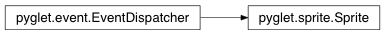

Sprite Class¶
-
class
Sprite(img, x=0, y=0, blend_src=770, blend_dest=771, batch=None, group=None, usage=’dynamic’, subpixel=False)¶ Instance of an on-screen image.
See the module documentation for usage.
Methods:
Attributes:
batchGraphics batch. colorBlend color. event_typesgroupParent graphics group. heightScaled height of the sprite. imageImage or animation to display. opacityBlend opacity. positionThe (x, y) coordinates of the sprite, as a tuple. rotationClockwise rotation of the sprite, in degrees. scaleBase Scaling factor. scale_xHorizontal scaling factor. scale_yVertical scaling factor. visibleTrue if the sprite will be drawn. widthScaled width of the sprite. xX coordinate of the sprite. yY coordinate of the sprite.
Attributes¶
-
Sprite.batch¶ Graphics batch.
The sprite can be migrated from one batch to another, or removed from its batch (for individual drawing). Note that this can be an expensive operation.
Type: Batch
-
Sprite.color¶ Blend color.
This property sets the color of the sprite’s vertices. This allows the sprite to be drawn with a color tint.
The color is specified as an RGB tuple of integers ‘(red, green, blue)’. Each color component must be in the range 0 (dark) to 255 (saturated).
Type: (int, int, int)
-
Sprite.event_types= [‘on_animation_end’]¶
-
Sprite.group¶ Parent graphics group.
The sprite can change its rendering group, however this can be an expensive operation.
Type: Group
-
Sprite.height¶ Scaled height of the sprite.
Read-only. Invariant under rotation.
Type: int
-
Sprite.image¶ Image or animation to display.
Type: AbstractImage or Animation
-
Sprite.opacity¶ Blend opacity.
This property sets the alpha component of the colour of the sprite’s vertices. With the default blend mode (see the constructor), this allows the sprite to be drawn with fractional opacity, blending with the background.
An opacity of 255 (the default) has no effect. An opacity of 128 will make the sprite appear translucent.
Type: int
-
Sprite.position¶ The (x, y) coordinates of the sprite, as a tuple.
Parameters: - x (int) – X coordinate of the sprite.
- y (int) – Y coordinate of the sprite.
-
Sprite.rotation¶ Clockwise rotation of the sprite, in degrees.
The sprite image will be rotated about its image’s (anchor_x, anchor_y) position.
Type: float
-
Sprite.scale¶ Base Scaling factor.
A scaling factor of 1 (the default) has no effect. A scale of 2 will draw the sprite at twice the native size of its image.
Type: float
-
Sprite.scale_x¶ Horizontal scaling factor.
A scaling factor of 1 (the default) has no effect. A scale of 2 will draw the sprite at twice the native width of its image.Type: float
-
Sprite.scale_y¶ Vertical scaling factor.
A scaling factor of 1 (the default) has no effect. A scale of 2 will draw the sprite at twice the native height of its image.Type: float
-
Sprite.visible¶ True if the sprite will be drawn.
Type: bool
-
Sprite.width¶ Scaled width of the sprite.
Read-only. Invariant under rotation.
Type: int
-
Sprite.x¶ X coordinate of the sprite.
Type: int
-
Sprite.y¶ Y coordinate of the sprite.
Type: int
Inherited members¶
Methods
Sprite.register_event_type(name)Register an event type with the dispatcher.
Registering event types allows the dispatcher to validate event handler names as they are attached, and to search attached objects for suitable handlers.
Parameters: name (str) – Name of the event to register.